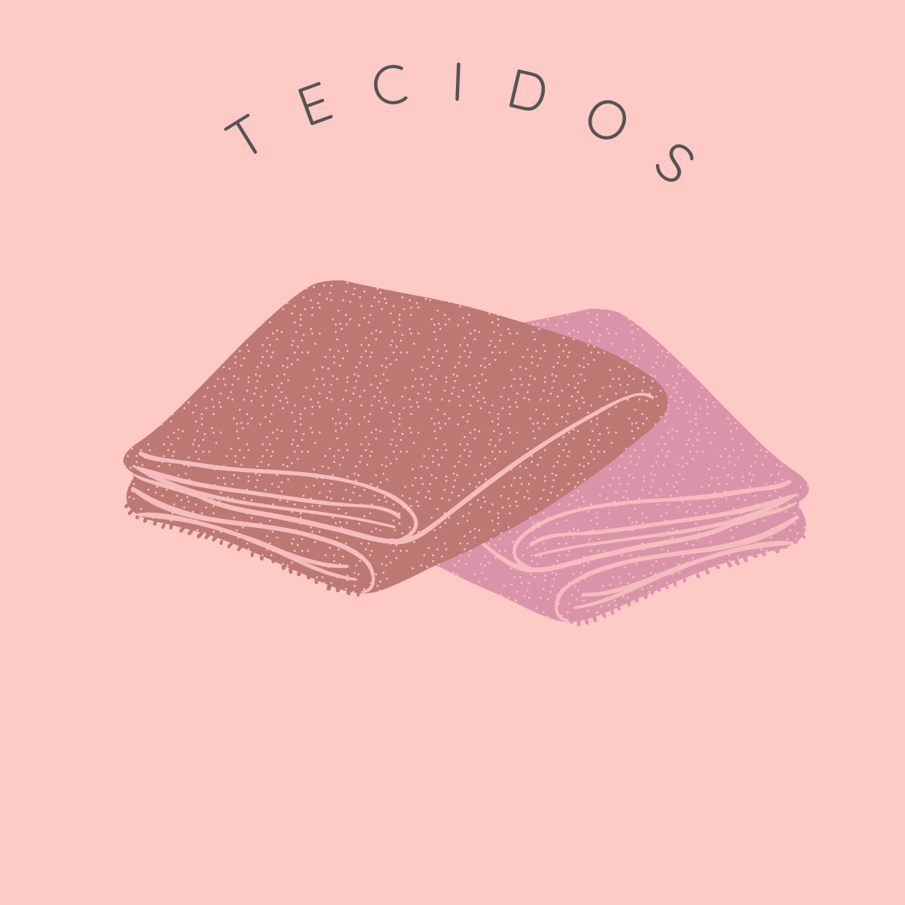

LEGAB
Materiais

Tecido de seda pura ou sintética, felpa curta, textura macia e lustrosa. Usado em trajes para a noite, cortinas e estofados. Abaixo alguns dos tipos deste tecido:
Ciselé: feito em trama de cetim e possui padrões de veludo em fundo fino e semitransparente. Parecido aos tecidos flocados.
Veludo Amassado: feito de felpa curta e prensada em uma ou várias direções para uma aparência cintilante.
Devorê: possui padronagem em fundo fino e semitransparente, obtida por um processo corrosivo conhecido como burn-out que dissolve quimicamente as áreas felpudas após a tecedura.
Fibra natural conseguida a partir da abertura dos casulos da larva do bicho-da-seda. É um tecido forte, porém, com aspecto delicado e brilhoso. A seda tem sido substituída por algumas fibras sintéticas e misturada com outros fios a fim de reduzir o preço ou produzir determinado efeito..
Fibra sintética feita a partir de derivados do petróleo. Possui uso bastante amplo que vai desde a imitação de seda à mistura com outros fios. A tecnologia está atenuando um dos principais problemas desse tecido: a pouca absorção.